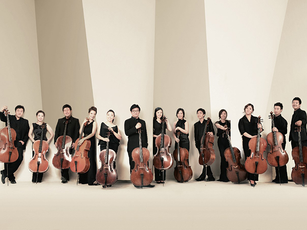

> CULTURE > 문화 공감
문화 공감
Culture For One Dollar
온 가족 행복한 문화나들이, 천원의 문화공감천원의 문화 공감
천원으로 누릴 수 있는 온 가족이 함께 즐기는 행복한 문화나들이! 마포구 행복지수 UP! 프로젝트에 당신을 초대합니다.천원의 문화공감은 (재)마포문화재단이 마포구민에게 더욱 가까이 다가가기 위하여 마련한 기획공연 시리즈로 고품격 공연을 저렴한가격으로 즐길 수 있는 프로그램입니다. 다양한 장르를 아우르는 기획력과 수준 높은 예술단체와의 파트너쉽으로 차별화된 기획공연을 선보여 온 마포아트센터의 노하우가 집약된 천원의 문화공감. 당신의 일상을 풍요롭게 만들어 줄 천원의 마법이 펼쳐집니다.
천원의 문화공감을 즐기는 방법
-
- step1
- 부담스러운 가격으로 인한 공연
에 대한 거리감 좁히기
-
- step2
- 다양한 장르의 공연을
가까이에서 즐기기
-
- step3
- 부담 없이 자주 보고
공연 맛들이기
공연안내
-
- MAC 천원의 문화공감-新선鮮놀음＂두번째달 X 소리꾼 김준수＂
- 기간 : 2021.08.27 ~ 2021.08.27
- 시간 : 70분(인터미션없음)
- 장소 : 마포구청대강당
- 가격 : 전석 1,000원
- 
- MAC 천원의 문화공감-Only Cello＂첼리스타 첼로 앙상블＂
- 기간 : 2021.04.29 ~ 2021.04.29
- 시간 : 60분(인터미션없음)
- 장소 : 아트홀 맥
- 가격 : 전석 1,000원
-
- MAC 천원의 문화공감- 커뮤니티 아트 마포 「꿈의 오케스트라」
- 기간 : 2020.11.22 ~ 2020.11.22
- 시간 : 120분(인터미션 30분)
- 장소 : 아트홀맥
- 가격 : 전석 무료